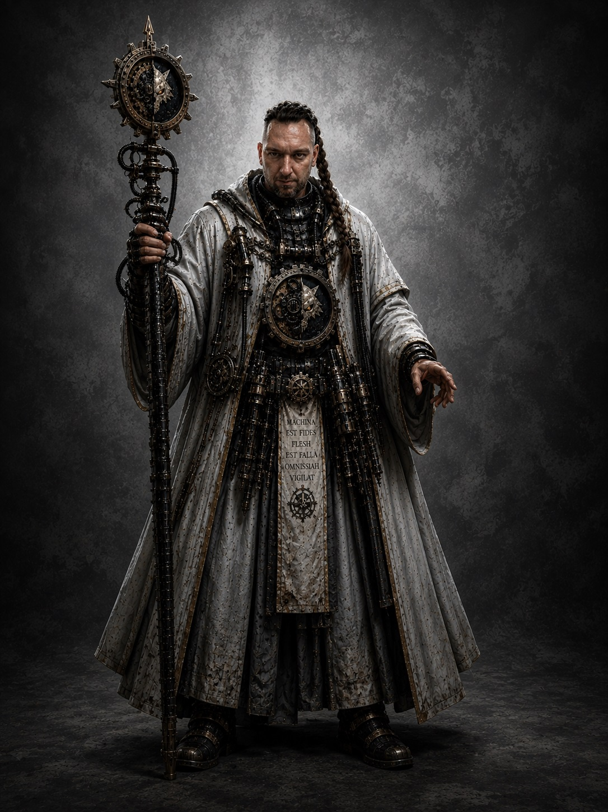
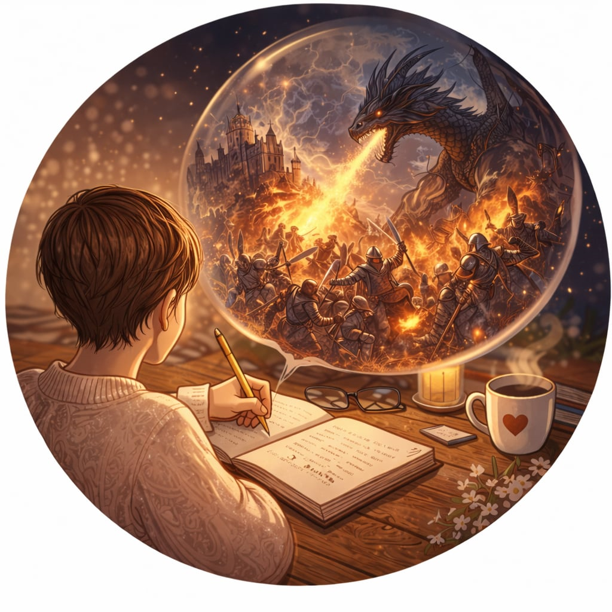

Magos Luna Mechanica
Wrox Zeth se narodil roku 785.M30 v průmyslových hlubinách Cthonie.
Dětství strávil mezi továrními komplexy, servisními šachtami a gangovým násilím podzemních měst.
Již od mládí vykazoval mimořádnou technickou zručnost a schopnost improvizace při opravách průmyslových zařízení.
Roku 800.M30 byl odveden mezi aspiranty Luna Wolves.
Během implantací a výcviku se však ukázalo, že jeho genetický profil není plně kompatibilní se standardním procesem přeměny Astartes.
Po incidentu během výcviku byl v rámci dohody předán Adeptus Mechanicus pod dohled Magose Koriala Zetha.
Právě zde vzniklo označení:„Wrox Zeth“
Původně šlo o zkomoleninu označení:„Wrong od Zeth“
— používaného pro „chybný subjekt“.
Jeho původní jméno bylo během staletí ztraceno.

Kronikáři Luny Mechanika
V hlubinách zapomenutých archivů Luna Mechanica,
daleko od hlučných továren a nekonečného rachotu strojů,
působí Sambria.
Není Magem ani válečníkem.
Je strážkyní příběhů, emocí a vzpomínek,
které by jinak pohltil čas a chlad prázdnoty.
Tam, kde ostatní vidí pouze data,
nachází duši ukrytou mezi řádky starých kronik.
Sbírá fragmenty legend, ztracené záznamy a ozvěny dávných světů,
aby z nich vytvářela nové příběhy schopné přežít i temnotu 41. milénia.
Říká se, že právě její mysl udržuje v Luna Mechanica jiskru lidskosti.
Že zatímco stroje budují konstrukce z oceli,
Sambria buduje světy z představivosti.
Ale ti, kteří ji skutečně znají, vědí jediné —
bez jejích příběhů by byla i ta největší dílna jen prázdným chrámem strojů.